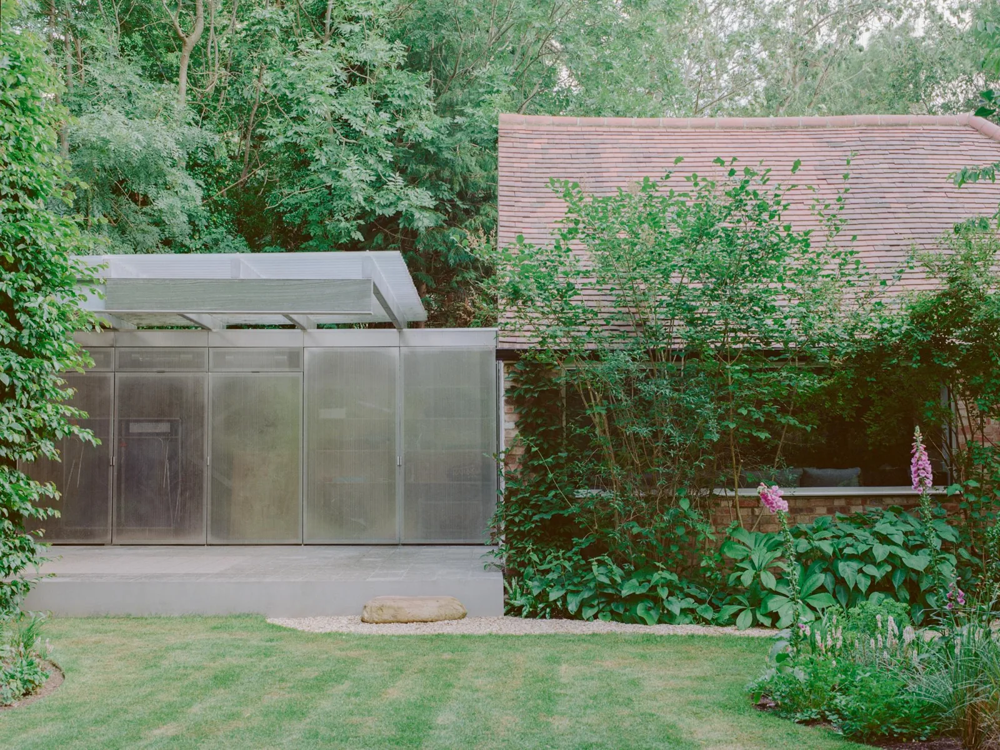
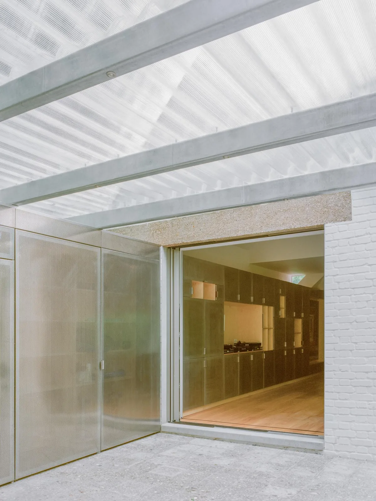
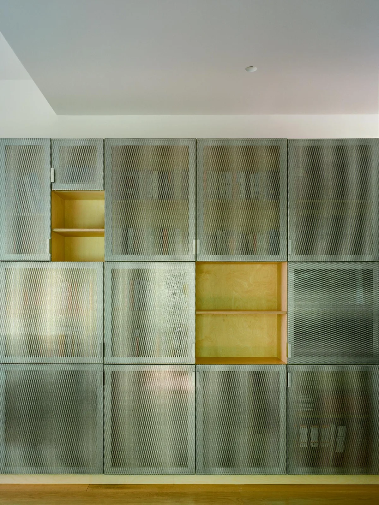
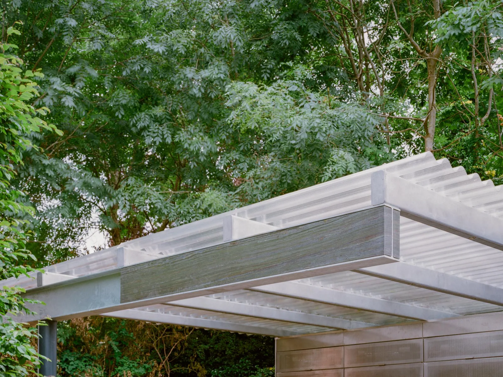
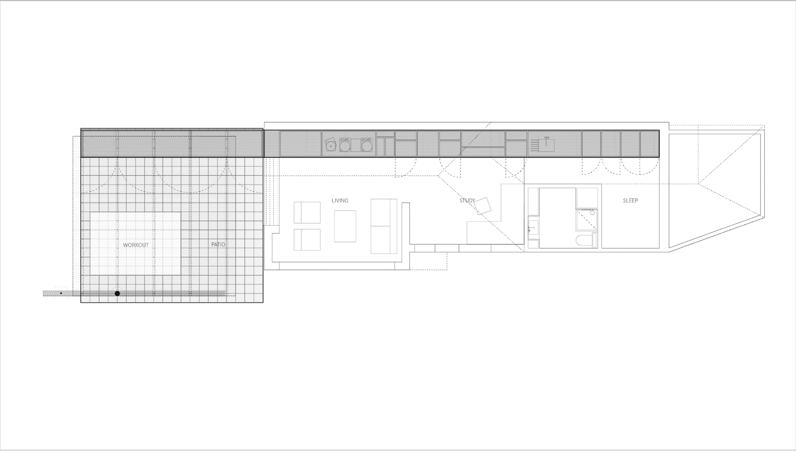
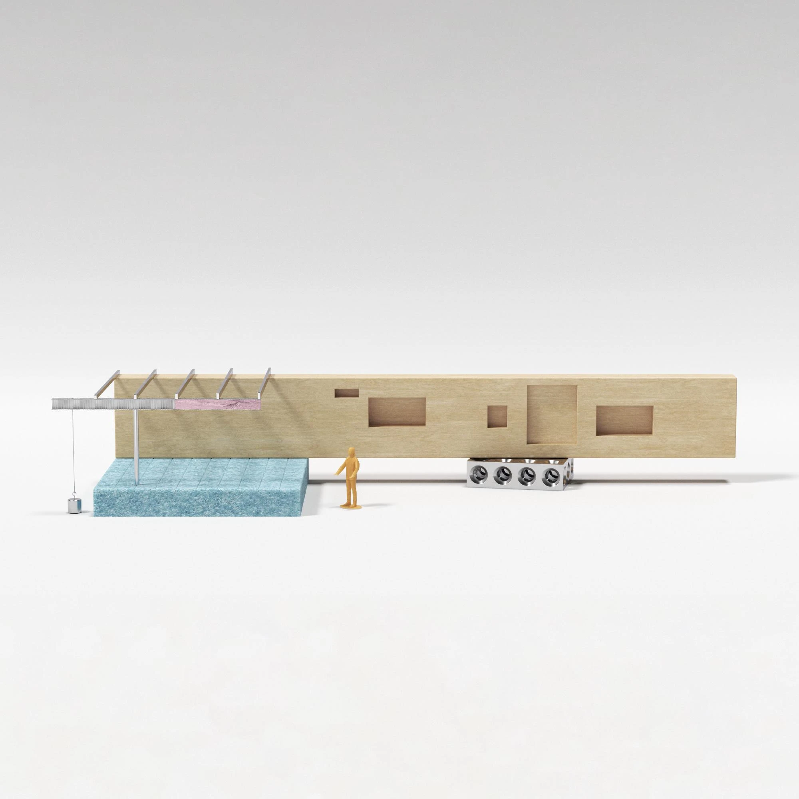
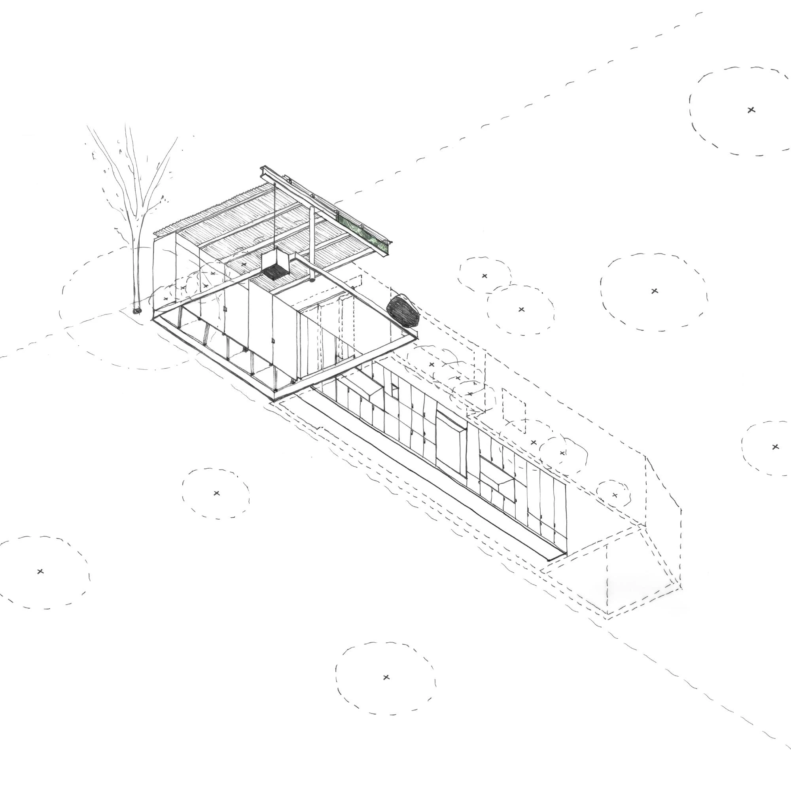

Garden pavilion and collection storage · 2025
Exeter Road Pavilion
Neiheiser Argyros
London, United Kingdom
Designed for an art collector and amateur DJ, the pavilion accommodates collection storage and display alongside garden gatherings. A DJ booth and sheltered outdoor space connect the private collection to music and social use.
Storage and shelter are treated as one architectural problem. A perforated steel cabinet runs from inside to outside, while a marble counterweight, exposed tension rod and steel beam balance the canopy, turning the relationships between parts into visible structural expression.


Relevant connections
SHOW
The art collection, DJ booth and garden gathering space bring display and social performance together.
Images and drawings / 07











